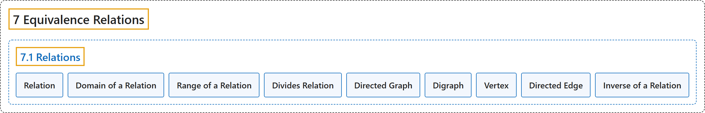

7.1 Relations
Classification

Glossary
| Term | Definition | 中文翻译 | Source |
|---|---|---|---|
| 7 Equivalence Relations 等价关系 |
(No definition) | （无定义） | Sundstrom, 2022, chapter 7 |
| 7.1 Relations 关系 |
(No definition) | （无定义） | Sundstrom, 2022, section 7.1 |
| Relation 关系 |
"Let \(A\) and \(B\) be sets. A relation R from the set \(\boldsymbol{A}\) to the set \(\boldsymbol{B}\) is a subset of \(A \times B\text{.}\)" | 设 \(A\) 和 \(B\) 是集合。从集合 \(\boldsymbol{A}\) 到集合 \(\boldsymbol{B}\) 的关系 R 是 \(A \times B\) 的子集。 | Sundstrom, 2022, section 7.1 |
| Domain of a Relation 关系的定义域 |
"If \(R\) is a relation from the set \(A\) to the set \(B\text{,}\) then the subset of \(A\) consisting of all the first coordinates of the ordered pairs in \(R\) is called the domain of \(R\text{.}\)" | 如果 \(R\) 是从集合 \(A\) 到集合 \(B\) 的关系，那么由 \(R\) 中所有有序对的第一个坐标组成的 \(A\) 的子集称为 \(R\) 的定义域。 | Sundstrom, 2022, section 7.1 |
| Range of a Relation 关系的值域 |
"The subset of \(B\) consisting of all the second coordinates of the ordered pairs in \(R\) is called the range of \(R\text{.}\)" | 由 \(R\) 中所有有序对的第二个坐标组成的 \(B\) 的子集称为 \(R\) 的值域。 | Sundstrom, 2022, section 7.1 |
| Divides Relation 整除关系 |
"Whenever we have spoken about one integer dividing another integer, we have worked with the “divides” relation on \(\mathbb{Z}\text{.}\) In particular, we can write \(D = \left\{ { {\left( {m, n} \right) \in \mathbb{Z} \times \mathbb{Z} } \mid m \text{ divides } n} \right\}\!\text{.}\)" | 每当谈到一个整数整除另一个整数时，我们用的就是 \(\mathbb{Z}\) 上的“整除”关系。具体地，可以写成 \(D = \left\{ { {\left( {m, n} \right) \in \mathbb{Z} \times \mathbb{Z} } \mid m \text{ divides } n} \right\}\!\)。 | Sundstrom, 2022, section 7.1 |
| Directed Graph 有向图 |
"A convenient way to represent such a relation is to draw a point in the plane for each of the elements of \(A\) and then for each \(\left( {x, y} \right) \in R\) (or \(x \mathrel{R} y\)), we draw an arrow starting at the point \(x\) and pointing to the point \(y\text{.}\) If \(\left( {x, x} \right) \in R\) (or \(x \mathrel{R} x\)), we draw a loop at the point \(x\text{.}\) The resulting diagram is called a directed graph or a digraph." | 表示这种关系的一种方便方法是：在平面上画一个点，对应 \(A\) 的每个元素；然后对每个 \(\left( {x, y} \right) \in R\)（即 \(x \mathrel{R} y\)），画一条箭头，从点 \(x\) 出发指向点 \(y\)。如果 \(\left( {x, x} \right) \in R\)（即 \(x \mathrel{R} x\)），就在点 \(x\) 处画一个环。所得的图称为有向图（directed graph 或 digraph）。 | Sundstrom, 2022, section 7.1 |
| Digraph 有向图（简称） |
"The resulting diagram is called a directed graph or a digraph." | 所得的图称为有向图（directed graph 或 digraph）。 | Sundstrom, 2022, section 7.1 |
| Vertex 顶点 |
"In a directed graph, the points are called the vertices. So each element of \(A\) corresponds to a vertex." | 在有向图中，这些点称为顶点。所以 \(A\) 的每个元素对应一个顶点。 | Sundstrom, 2022, section 7.1 |
| Directed Edge 有向边 |
"The arrows, including the loops, are called the directed edges of the directed graph." | 这些箭头（包括环）称为有向图的有向边。 | Sundstrom, 2022, section 7.1 |
| Inverse of a Relation 逆关系 |
"Let \(R\) be a relation from the set \(A\) to the set \(B\text{.}\) The inverse of \(\boldsymbol{R}\), written \(R^{ - 1}\) and read “\(R\) inverse,” is the relation from \(B\) to \(A\) defined by" | 设 \(R\) 是从集合 \(A\) 到集合 \(B\) 的关系。\(\boldsymbol{R}\) 的逆记作 \(R^{ - 1}\)，读作“\(R\) 逆”，是如下定义的从 \(B\) 到 \(A\) 的关系 | Sundstrom, 2022, section 7.1 |
References
Sundstrom, T. (2022). Mathematical reasoning: Writing and proof (Version 2.1; PreTeXt edition by Grand Valley State University). Retrieved October 30, 2026, from https://gvsuoer.github.io/sundstrom-textbook/frontmatter.html